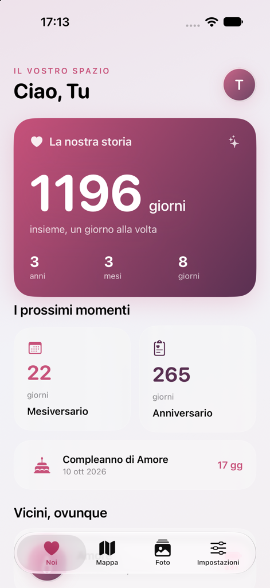

Ciao, siamo Crimi Gang
Le cose belle
nascono
insieme.
Siamo Cristian e Noemi. Creiamo app, piccoli mondi e cose che ci fanno stare bene.
Per passione, e con un po’ di cuore.
Due persone. Una passione condivisa.


 Crimi LoveTiny Cozy TownCREATO CONDA NOI DUE
Crimi LoveTiny Cozy TownCREATO CONDA NOI DUESviluppati con passionePensati per le piccole coseUn passo alla volta
Il nostro piccolo universo
Idee che prendono vita.
Due progetti diversi, la stessa voglia di creare qualcosa di nostro.

CCristian
NNoemi
il nostro progetto preferito? Creare insieme.Dietro lo schermo, noi
Una coppia.
Mille «e se facessimo…?»
Cristian scrive il codice, Noemi mette tutto alla prova. Siamo fidanzati e condividiamo la curiosità di trasformare le idee in qualcosa da usare, esplorare e amare.
Piacere di conoscerti